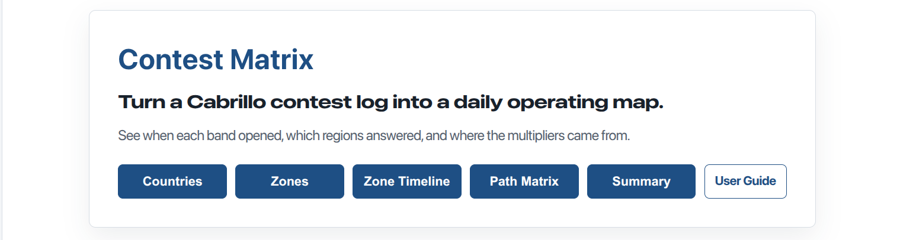
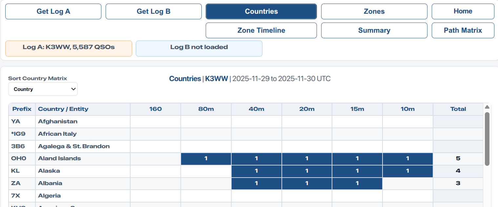
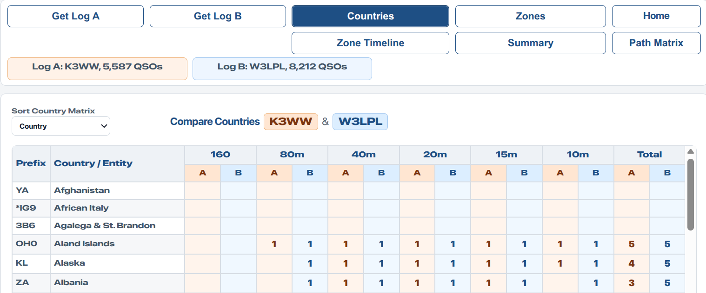
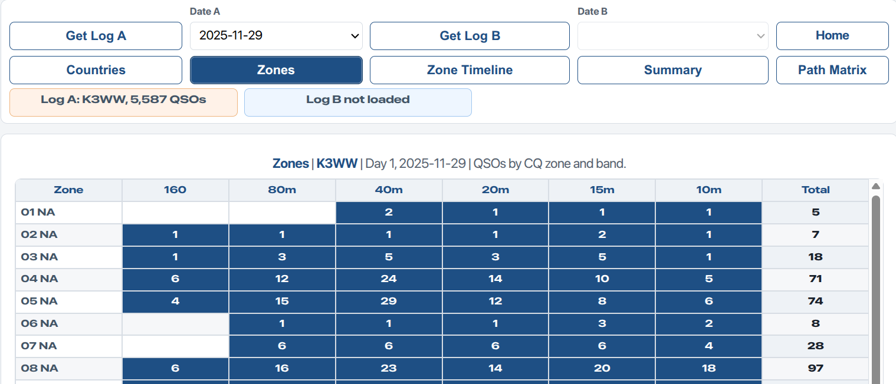
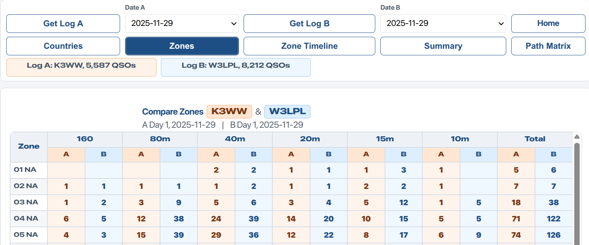
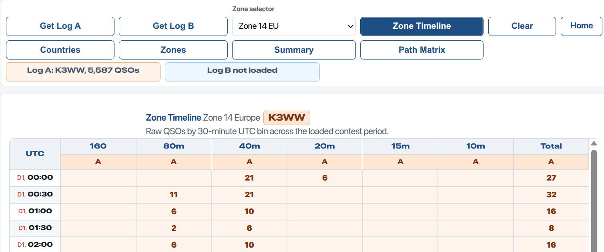
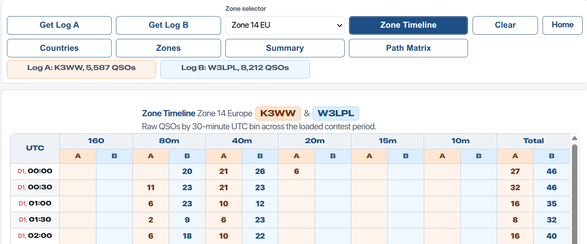
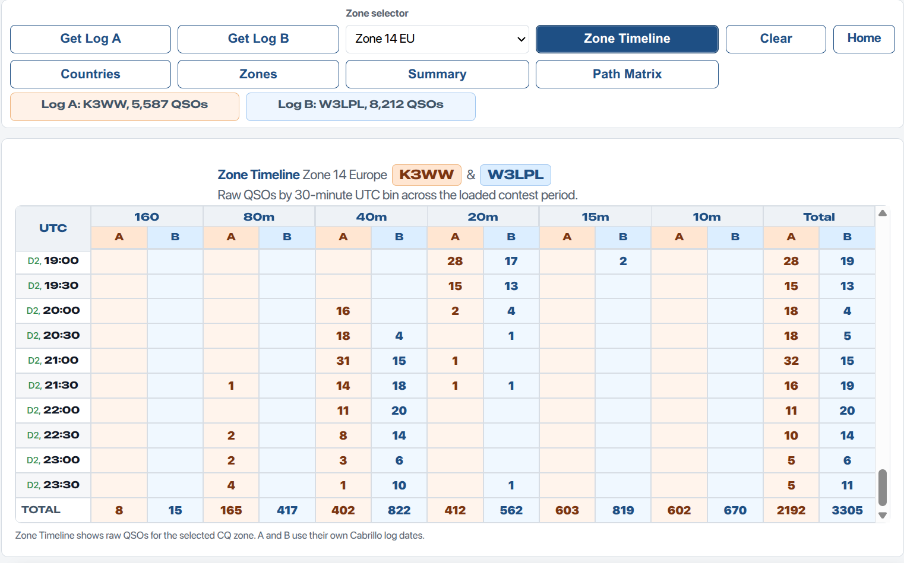
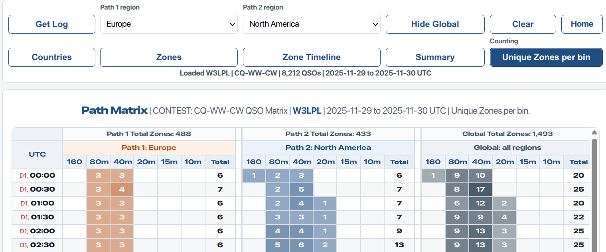
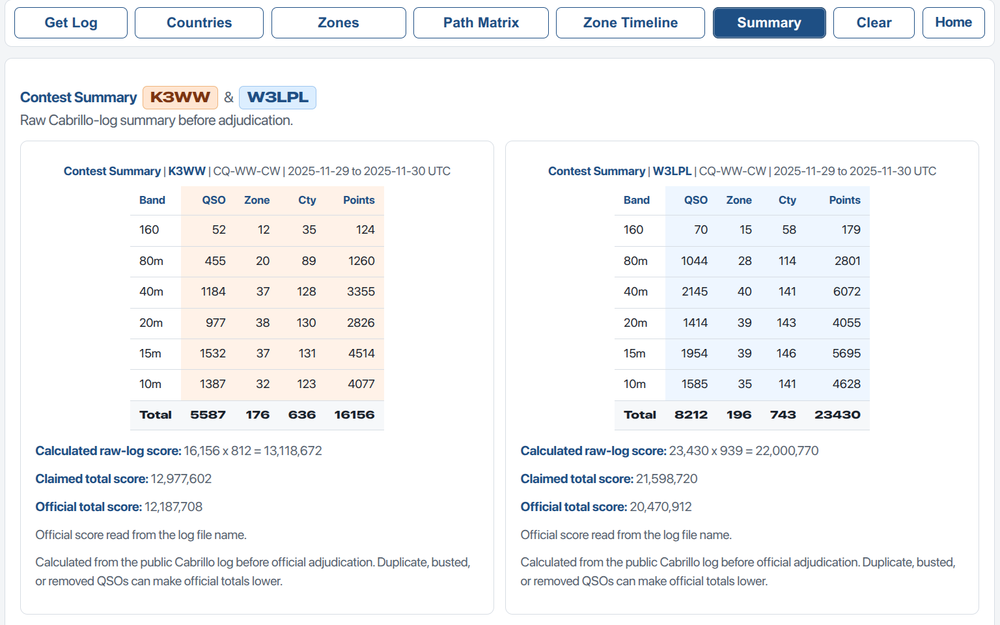

Contest Matrix User Guide
Turn a Cabrillo contest log into operating intelligence.
Use Contest Matrix to see which countries and CQ zones were worked, when a selected zone was active, how paths opened over time, and how two callsigns compare side by side.
Choose The Outcome You Want
The opening page is organised around outcomes. Load one log for a single-station review, or add Log B to turn the same view into a comparison.

The home page opens with outcome buttons. Start with the question you want answered.
Quick Start: One Log
- Open Contest Matrix.
- Choose Countries, Zones by Day, or Zone Timeline.
- Press Get Log A and choose a Cabrillo log file.
- The selected matrix appears immediately.
- Add Log B later if you want a side-by-side comparison.
Quick Start: Compare Two Logs
- Choose Countries, Zones by Day, or Zone Timeline.
- Press Get Log A and choose the first Cabrillo log.
- Press Get Log B and choose the second Cabrillo log.
- The same view expands to A/B comparison columns.
- Use Summary to compare score components.
Practical Tip: Use Two Browser Windows
Open Contest Matrix in one browser window and this User Guide in another. That lets you follow the guide without leaving your loaded log data.
- Browser 1: Contest Matrix app.
- Browser 2: Contest Matrix User Guide.
Countries
Countries shows worked countries and entities by band. This is the clearest multiplier review. It quickly shows what was worked, what was missed, and which bands carried the country count.
With one log loaded, the table shows one station. With two logs loaded, Log A and Log B appear side by side under each band.
Log A uses orange columns. Log B uses blue columns.

One log shows which countries/entities were worked on each band.

Load Log B to compare two callsigns, stations, or contest years side by side.
How to read Countries: each worked country/entity shows 1 on each band where it was worked. Row totals show how many bands worked that country/entity. Column totals show unique countries/entities worked on each band; these are country multiplier counts before adjudication.
Zones by Day
Zones by Day shows CQ zone activity by band for the selected contest day. Use the date selectors to compare Day 1 with Day 2, or to compare selected days from two different logs.
This helps answer questions such as: which zones appeared on Day 1, which appeared on Day 2, and which band carried the strongest zone reach?

One log shows QSO activity by CQ zone and band.

A/B columns compare selected contest days from each loaded log.
How to read Zones by Day: cells show raw QSOs with each CQ zone on each band for the selected day. Row totals show raw QSOs for that zone on that day. The footer row shows unique CQ zones worked on each band for that day; these are selected-day zone multiplier counts before adjudication.
Period check: Summary uses the full contest period. Zones by Day uses the selected day only. The totals will differ unless the selected period is the same.
Zone Timeline
Zone Timeline shows when one selected CQ zone was active across the full contest period. Select a zone, then inspect the 30-minute UTC rows to see the timing of openings by band.
This view is useful for comparing years, callsigns, antennas, or strategies. A strong station may reveal openings that a weaker station missed.

One log shows the timing of activity from one selected CQ zone.

Day 1 rows show when each band first became useful for the selected zone.

Day 2 rows and totals complete the full contest-period picture.
How to read Zone Timeline: cells show raw QSOs with the selected CQ zone during each 30-minute UTC bin. Row totals show QSOs in that time bin. Column totals show raw QSOs with the selected zone on each band.
Path Matrix
Path Matrix uses one Cabrillo log to show timing by selected broad regions. It is the best view for seeing when Europe, North America, Oceania, Africa, Asia, or South America answered on each band.
Path Matrix uses one selected log. If you have already loaded Log A and Log B for comparison, Path Matrix still asks which single log to use.
The counting button cycles through:
- Unique Zones per bin - default planning view.
- Cumulative Zones - zones counted once as they accumulate.
- Raw QSOs - every QSO in each 30-minute bin.

Path Matrix shows when selected broad regions were active by band across the contest.
Summary
Summary gives a compact full-contest score estimate from the public Cabrillo log. It shows QSO count, zone multipliers, country multipliers, and raw points by band across the full loaded contest period.
With Log A and Log B loaded, Summary shows two tables on the same page. This makes it easy to compare the shape of two results before looking deeper into Countries, Zones, or Zone Timeline.

Summary compares the score shape of two logs before official adjudication.
Planning And Review Ideas
| Question | Best View |
|---|---|
| Which countries did this station work on each band? | Countries |
| Which CQ zones were worked by band on a selected day? | Zones by Day |
| When did one zone answer during the contest? | Zone Timeline |
| When were broad regions active by band? | Path Matrix |
| How do two callsigns or years compare? | Countries, Zones by Day, Zone Timeline, Summary |
Operator idea: compare your own log against a stronger public log. Look for countries, zones, and time windows that the stronger station worked and you missed.
Cabrillo Logs And Privacy
Contest Matrix reads Cabrillo log files directly in your browser. The app does not upload your log to a server. It reads the station callsign, contest name, QSO dates, frequency, time, worked callsign, and CQ zone from the file.
Country matching uses CTY.DAT style prefix rules. It is useful for planning and review, but official contest results can differ after adjudication, duplicate checking, busted-call checking, and exchange checking.
The screenshots in this guide use example public logs such as K3WW_2025_MULTI-TWO_Final_12187708.log and W3LPL_2025_MULTI-TWO_Final_20470912.log. When a filename ends with the official score, Contest Matrix can show that score in the Summary view.
Finding Public Cabrillo Logs
Many major contests publish public Cabrillo logs after results are processed. Contest Matrix can read those logs when you save them as a plain text file.
- Open the contest public logs page in your browser.
- Find the callsign you want to study.
- Open the callsign log. It will usually appear as plain text in Cabrillo format.
- Save the page as a file with a simple name, for example vk1a-2025-cqww-cw.log.
- Open Contest Matrix and press Get Log A.
- Select the saved .log or .txt file.
If your browser saves the file as .txt, that is fine. A Cabrillo log is essentially a structured plain text file.
Example source: CQ WW public logs are published by contest year and mode. Use public logs responsibly and keep the original contest context in mind when comparing stations.
Important Notes
- Blank cells mean no matching QSOs were found in the loaded log data.
- Counts are based on the Cabrillo file loaded into the browser.
- Countries and entities are approximate and depend on prefix lookup data.
- Official results may be lower or different after contest adjudication.
- Use the internal scroll bars inside the matrix panels.
Credits
© Author John Loftus. Technical assistance OpenAI.